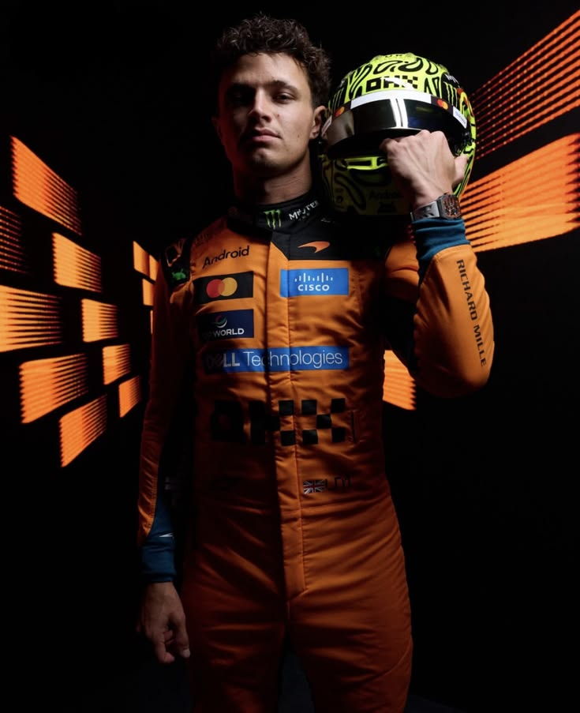

Lando Norris : L'Ascension d'une Étoile de la Formule 1
L'Icône d'une Nouvelle Ère Automobile
Lando Norris est né le 13 novembre 1999 à Bristol, dans le sud-ouest de l'Angleterre.
Issu d'une famille aisée, avec un père homme d'affaires et une mère d'origine belge, il baigne très tôt dans un univers de compétition.
Pourtant, ce n'est pas vers les voitures qu'il se tourne en premier, mais vers le pilotage de motos, avant que son père ne lui fasse découvrir le karting à l'âge de sept ans.
Ce jour-là, devant un circuit local, le destin du jeune Lando bascule : il veut devenir pilote de course.
Dès ses débuts en karting, Lando Norris affiche une pointe de vitesse hors du commun.
En 2014,
il entre dans l'histoire en devenant le plus jeune champion du monde de karting de la CIK-FIA, battant le record de précocité de Lewis Hamilton.
Son passage à la monoplace est une véritable démonstration de force : il remporte presque tout sur son passage.
Champion de Formule 4 britannique, champion de Formule Renault 2.0 et champion d'Europe de Formule 3 en 2017, il ne laisse que des miettes à ses concurrents.
En 2018, il termine vice-champion de Formule 2 derrière George Russell, validant ainsi son ticket pour l'élite mondiale : la Formule 1.
Lando Norris rejoint la prestigieuse écurie McLaren en 2019, à seulement 19 ans.
Très vite, il s'impose non seulement par son talent pur,
mais aussi par sa personnalité attachante et son humour décalé sur les réseaux sociaux.
Aux côtés de Carlos Sainz, il forme le duo "CarLando", redonnant une image dynamique et humaine à la F1 moderne.
Son premier podium intervient dès 2020 au Grand Prix d'Autriche, marquant le début d'une série de performances solides.
Pilote d'une régularité métronomique, il devient le pilier central du projet de reconstruction de McLaren, refusant les offres des plus grandes écuries pour rester fidèle à l'équipe de Woking.
Au fil des saisons, Lando Norris affine son pilotage et gagne en maturité.
Longtemps frustré par des victoires qui lui échappaient de peu,
notamment sous la pluie en Russie en 2021, il ne baisse jamais les bras.
En 2024, il franchit enfin la dernière étape en remportant sa première victoire en Grand Prix à Miami,
s'imposant face au redoutable Max Verstappen.
Ce succès transforme le jeune prodige en un prétendant sérieux au titre mondial, prouvant à tous qu'il a l'étoffe des plus grands champions.
Au-delà de ses exploits sur l'asphalte, Lando Norris est une figure de proue de sa génération.
Passionné de jeux vidéo et de simulation, il a fondé "Quadrant", une structure mêlant e-sport, gaming et lifestyle.
Il est également l'un des rares pilotes à parler ouvertement de la santé mentale et du stress lié à la compétition, brisant les tabous dans un milieu souvent jugé froid et impitoyable.
Aujourd'hui, Lando Norris n'est plus seulement un espoir de la Formule 1, il en est l'un des visages les plus influents et respectés.

Lando Norris : L'Enfant Prodige Devenu Roi de la F1
Plus qu'un Pilote, le Symbole d'une Génération
Le parcours de Lando Norris est une succession de moments de bravoure qui ont redéfini son statut en Formule 1.
Tout commence par son record de précocité en 2014, où il devient le plus jeune champion du monde de karting de l'histoire, surpassant les débuts de Lewis Hamilton.
Cette étincelle de génie se confirme dès ses premières années chez McLaren, notamment lors du mémorable Grand Prix d'Autriche en 2020.
C’est là qu’il forge sa légende du "Last Lap Lando" en arrachant son tout premier podium grâce à un tour final d'une intensité absolue, comblant un écart de cinq secondes dans les derniers kilomètres.
Son talent pur éclate à nouveau sous la pluie battante de Sotchi en 2021, où il décroche une pole position héroïque face aux plus grands champions du monde.
S'il a dû attendre 2024 pour monter sur la plus haute marche du podium,
sa victoire magistrale au Grand Prix de Miami a marqué les esprits par sa maîtrise tactique.
Ce jour-là, il ne s'est pas contenté de gagner,
il a dominé Max Verstappen à la régulière, prouvant qu'il avait enfin la voiture et le mental pour devenir un patron du paddock.
Plus tard la même année, sa démonstration de force à Singapour a rappelé les plus grandes heures de l'écurie McLaren,
creusant des écarts abyssaux sur l'un des circuits les plus physiques au monde.
Au-delà des trophées, son plus bel exploit reste sans doute sa capacité à briser les codes du sport automobile traditionnel.
En parlant ouvertement de ses doutes et de l'importance de la santé mentale, il a transformé l'image du pilote de course, passant du simple compétiteur à une icône moderne et inspirante pour toute une génération.
Chaque tour de piste et chaque prise de parole renforcent cette trajectoire unique d'un pilote qui, avec le numéro 4, est devenu l'un des plus redoutables et respectés de l'ère moderne.
.jpg)
.jpg)